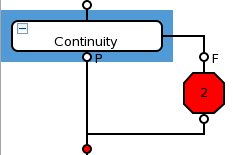

Narrow selection and wide selection
For the Run and Branch node and Flow control nodes which have sub-branches structure, you can narrow select or wide select it in the Flow Sequence Editor.
- Narrow selection: only the node itself is selected and its sub-branches are not chosen.

- Wide selection: the node and its subbranches are all chosen.

Running a wide selection behaves like running a testflow but ignores binning.
Note For a consistent display of PASS/FAIL result, you will need the wide selection for
debugging.
To toggle narrow/wide selection, you can click the node with Ctrl pressed, or directly click Ctrl + Right or Ctrl + Left.
Functional changes
- Introduced in SmarTest 6.5.3
- SmarTest 7.1.0: Single step execution mode for debugging testflows introduced